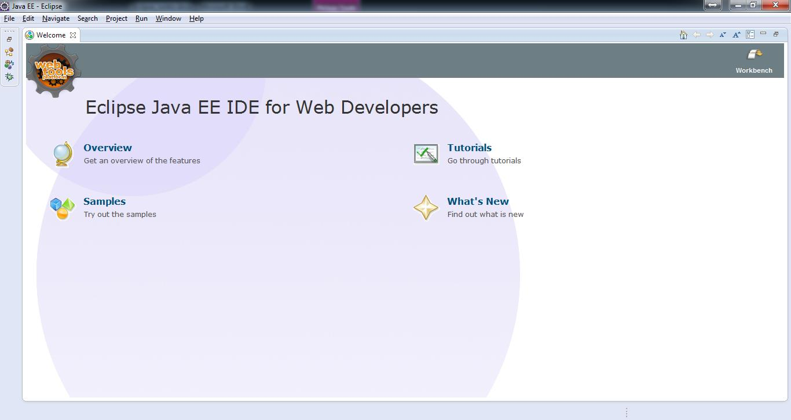
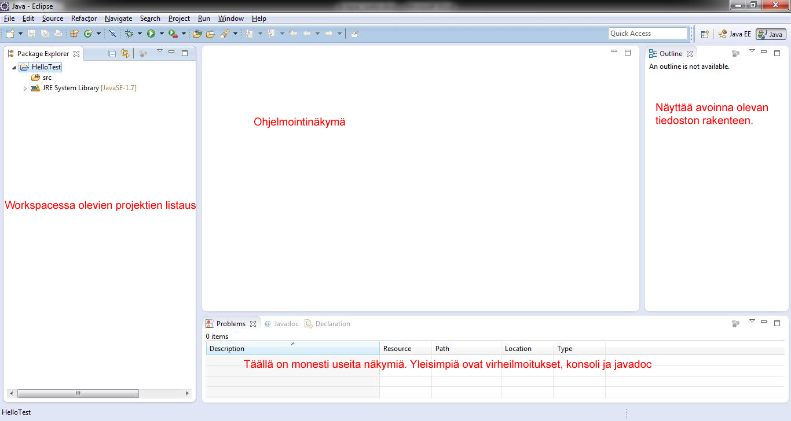
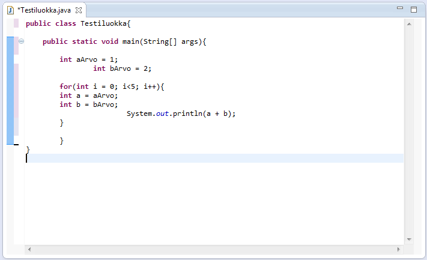
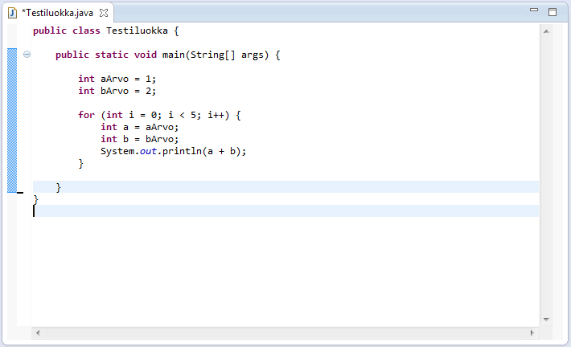
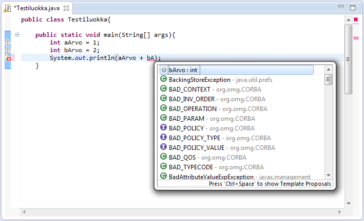

Käyttöliittymä

- Aloitusnäkymästä löytyy tietoa Eclipsen ominaisuuksista ja harjoituksia
- Workspace-nappulasta päästään perusnäkymään, jota käytetään ohjelmointiin

- Oletusnäkymä
- Ikkunoiden välilehtiin voidaan lisätä näkymiä Window-valikosta
- Eclipsen ylävalikosta löytyvistä valikoista löytyy monia toimintoja ja asetuksia
- File-valikosta löytyy tiedostojen ja projektien avaamiseen/tallentamiseen liittyviä toimintoja, ja projektien importtaus/exporttaus
- Edit-valikosta löytyy mm. copy, cut ja paste, ja etsimis-toiminnot
- Source-valikosta löytyy ohjelmakoodin muokkaamiseen ja generointiin liittyviä toiminta
- Refactor-valikosta löytyy refaktorointia auttavia toimintoja, kuten metodien luonti
- Navigate-valikosta löytyy toimintoja ohjelmissa siirtymiseen tai esim. linkkien avaamiseen
- Search-valikosta löytyy paremmat työkalut etsintään
- Project-valikosta löytyy projektin puhdistukseen ja buildaamiseen työkaluja
- Run-valikosta löytyy projektin ajamiseen ja debuggaukseen liittyviä työkaluja
- Window-valikosta saadaan erilaisia näkymiä ja ikkunoita esille
- Help-valikossa sijaitsee aputoimintojen lisäksi ohjelman päivitykseen ja lisäosien asentamiseen työkaluja
Pikakomennot
CTRL + 7
- Tekee rivin alkuun kommenttimerkin //
- Muuttaa myös halutun rivin tai rivit kommenteiksi
ALT + UP/DOWN
- Siirtää valitun rivin ylös tai alas päin
CTRL + BACKSPACE
- Poistaa riviltä yhden merkin sijasta koko sanan
CTRL + SHIFT + F
- ”Siistii” koodin, järjestää ohjelmakoodin rivit kerralla syntaksin mukaisesti
Ennen:

Jälkeen:

CTRL + SPACE
- Ehdottaa mahdollisia attribuutteja, luokkia tai metodeja käyttäjälle
- Esim. kirjoita ”syso” ja paina CTRL + SPACE, niin komento täydentää riville nopeasti System.out.println( );

CTRL + SHIFT + O
- Lisää puuttuvan kirjaston luokkaan
ALT + SHIFT + R
- Muuttaa valitun attribuutin nimet kerralla